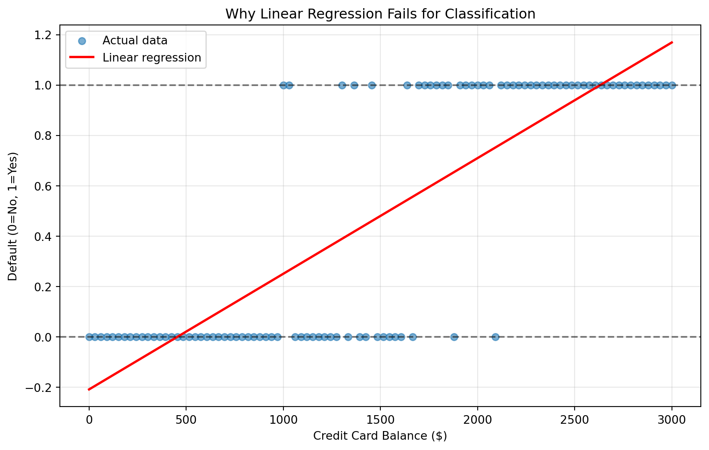
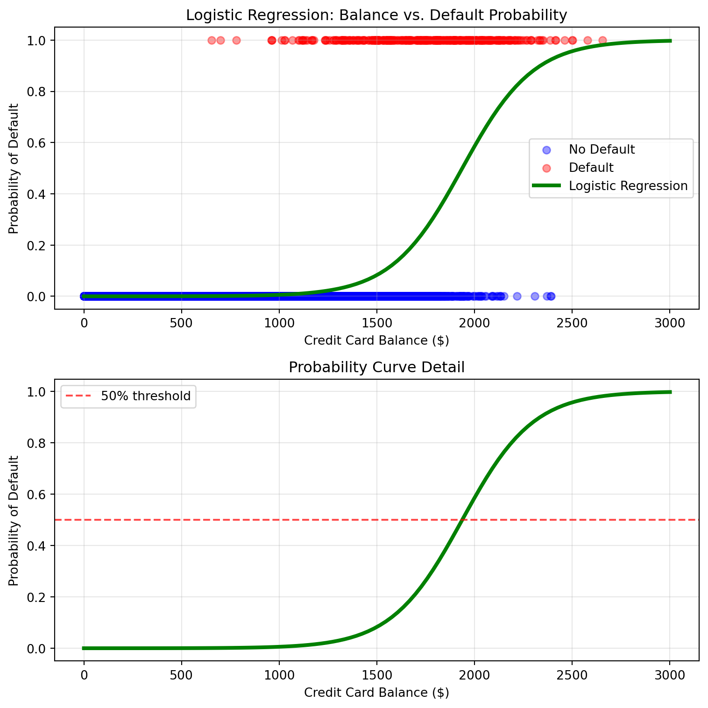

23Introduction to Logistic Regression for Classification
In business, not every question is about predicting numbers. While regression helps us answer questions like “How much revenue will we generate?” or “What price should we set?”, many critical business decisions involve predicting categories:
Will this customer churn or stay?
Is this email spam or legitimate?
Should we approve or deny this loan application?
Will this marketing campaign be successful or unsuccessful?
NoteExperiential Learning
Think about a business decision you’ve encountered that involved choosing between two or more categories. Maybe you’ve seen a store employee decide whether to offer a discount to keep a customer, or watched a website determine whether to show you a premium upgrade offer.
Write down one example where a business had to classify something into categories rather than predict a number. By the end of this chapter, you’ll understand how logistic regression can automate and improve these categorical decisions.
This chapter introduces logistic regression, the foundational algorithm for classification problems—predicting which category or class an observation belongs to. While linear regression predicts continuous values, logistic regression predicts probabilities and categories, making it perfect for yes/no, approve/deny, and other categorical business decisions.
By the end of this chapter, you will be able to:
Explain why linear regression fails for classification problems and how logistic regression solves this
Understand the logistic function and how it transforms predictions into probabilities
Interpret logistic regression coefficients in terms of log-odds, odds, and business impact
Build and compare simple and multiple logistic regression models using scikit-learn’s LogisticRegression
Apply logistic regression to real business scenarios using the ISLP Default dataset
Make probability-based predictions and understand the 0.5 classification threshold
Use proper train/test splits to evaluate model performance
Recognize practical considerations including class imbalance and model convergence issues
Note📓 Follow Along in Colab!
As you read through this chapter, we encourage you to follow along using the companion notebook in Google Colab (or another editor of your choice). This interactive notebook lets you run all the code examples covered here—and experiment with your own ideas.
You’ve mastered linear regression for predicting continuous outcomes like sales revenue, house prices, or customer lifetime value. But what happens when your business outcome is categorical rather than numeric? This is where we transition from regression problems to classification problems.
The Fundamental Difference
The key distinction lies in what you’re trying to predict:
Regression: Predicts continuous numerical values (any value within a range)
“How much will this customer spend next month?” → $0 to $10,000+
“What will our quarterly revenue be?” → Any positive dollar amount
Classification: Predicts discrete categories or classes (specific labels from a predefined set)
“Will this customer default on their loan?” → Yes or No
“Is this transaction fraudulent?” → Fraudulent or Legitimate
Why Linear Regression Doesn’t Work for Classification
Let’s explore this with a concrete business example. Imagine you work for a credit card company trying to predict customer default based on account balance. You have historical data showing whether customers defaulted (1 = Yes, 0 = No) based on their credit card balance.
If we naively apply linear regression to this classification problem, we run into several critical issues:
Predictions outside valid range: Linear regression can predict values like -0.3 or 1.8, but probabilities must be between 0 and 1
Straight line assumption: Real-world classification relationships often follow S-shaped curves, not straight lines
No probability interpretation: A prediction of 0.7 from linear regression doesn’t clearly represent a 70% probability
Show code for demonstrating linear regression problems
# Try linear regression on classification dataX = default_data[['balance']]y = default_data['default']linear_model = LinearRegression()linear_model.fit(X, y)linear_predictions = linear_model.predict(X)# Visualize the problemplt.figure(figsize=(10, 6))plt.scatter(default_data['balance'], default_data['default'], alpha=0.6, label='Actual data')plt.plot(default_data['balance'], linear_predictions, color='red', linewidth=2, label='Linear regression')plt.xlabel('Credit Card Balance ($)')plt.ylabel('Default (0=No, 1=Yes)')plt.title('Why Linear Regression Fails for Classification')plt.legend()plt.grid(True, alpha=0.3)# Highlight the problemsplt.axhline(y=0, color='black', linestyle='--', alpha=0.5)plt.axhline(y=1, color='black', linestyle='--', alpha=0.5)plt.show()

These classification challenges are incredibly common across industries, affecting everything from financial services and healthcare to marketing and e-commerce.
Binary Classification (2 categories):
Email: Spam vs. Not Spam
Loan Applications: Approve vs. Deny
Medical Diagnosis: Disease vs. No Disease
Marketing Response: Will Respond vs. Won’t Respond
Multi-class Classification (3+ categories):
Customer Satisfaction: Low, Medium, High
Product Categories: Electronics, Clothing, Home & Garden
Risk Levels: Low Risk, Medium Risk, High Risk
Fortunately, machine learning offers sophisticated algorithms specifically designed to address the critical concerns we identified with linear regression—algorithms that naturally handle the 0-1 probability constraint, capture non-linear S-shaped relationships, and provide meaningful probability interpretations. This chapter introduces logistic regression, a fundamental algorithm engineered specifically for binary classification problems (predicting between two categories). While more advanced algorithms exist for multi-class classification scenarios (predicting among three or more categories), mastering binary classification with logistic regression provides the essential foundation for understanding all classification approaches in machine learning.
Knowledge Check
NoneRegression vs. Classification Practice
For each business scenario below, determine whether this is a regression or classification problem:
Predicting how many units of a product will sell next month
Determining whether a customer will purchase a premium subscription (Yes/No)
Estimating the dollar amount of insurance claims
Classifying customer support tickets as “Technical”, “Billing”, or “General”
Forecasting next quarter’s revenue in dollars
Deciding whether to show a customer a promotional offer (Show/Don’t Show)
For each scenario, explain your reasoning: What clues helped you identify the problem type? What would the model output look like?
23.2 Understanding Logistic Regression
Logistic regression solves the classification problem by transforming the linear regression approach with a mathematical function that constrains predictions to valid probability ranges and creates the S-shaped curve that better represents real-world classification relationships.
The Logistic Function: Creating Probabilities
The key innovation of logistic regression is the logistic function (also called the sigmoid function), which transforms any real number into a value between 0 and 1—perfect for representing probabilities.
\[p = \frac{1}{1 + e^{-z}}\]
Where \(z = \beta_0 + \beta_1 x_1 + \beta_2 x_2 + ... + \beta_k x_k\) (the linear combination of features)
Let’s visualize how this function creates the characteristic S-shaped curve:
Note🎥 Video Spotlight: Logistic Regression Explained
A simple introduction to logistic regression to help reinforce the concepts you just read!
Key Properties of the Logistic Function
The logistic function has several properties that make it perfect for classification:
Always between 0 and 1: No matter what the linear combination z equals, the output is always a valid probability
S-shaped curve: Captures the realistic relationship where small changes have big effects near the decision boundary
Smooth transitions: Provides gradual probability changes rather than abrupt jumps
Symmetric around 0.5: When z = 0, the probability equals exactly 50%
From Probabilities to Odds to Log-Odds
To fully understand logistic regression coefficients, we need to explore three related concepts: probabilities, odds, and log-odds.
Probability is what we’re most familiar with—the chance something will happen, expressed as a value between 0 and 1:
Probability of default = 0.2 means 20% chance of defaulting
Probability of customer purchase = 0.75 means 75% chance of buying the product
Odds express the ratio of the probability something happens to the probability it doesn’t happen: \[\text{Odds} = \frac{p}{1-p}\]
Probability
Odds
Interpretation
0.10
0.11
10% chance (1 in 10)
0.20
0.25
20% chance (1 in 5)
0.50
1.00
50% chance (1 in 2)
0.80
4.00
80% chance (4 in 5)
0.90
9.00
90% chance (9 in 10)
Log-odds (also called logit) is the natural logarithm of the odds: \[\text{Log-odds} = \ln\left(\frac{p}{1-p}\right)\]
Log-odds might seem abstract at first, but they serve a crucial mathematical purpose in logistic regression. While probabilities are constrained between 0 and 1, and odds range from 0 to infinity, log-odds can take any value from negative infinity to positive infinity. This unbounded range makes log-odds perfect for the linear combination part of logistic regression (the \(\beta_0 + \beta_1 x_1 + \beta_2 x_2 + ...\) portion).
Here’s how all three concepts relate to each other:
Probability
Odds
Log-odds
Business Interpretation
0.10
0.11
-2.20
Very unlikely event (10% chance)
0.20
0.25
-1.39
Unlikely event (20% chance)
0.50
1.00
0.00
Neutral/uncertain (50-50 chance)
0.80
4.00
1.39
Likely event (80% chance)
0.90
9.00
2.20
Very likely event (90% chance)
Notice how:
Negative log-odds indicate events are less likely than not (probability < 0.5)
Positive log-odds indicate events are more likely than not (probability > 0.5)
Interpreting Logistic Regression Coefficients
In logistic regression, coefficients represent the change in log-odds for a one-unit increase in the predictor variable. While this sounds complex, there’s a practical interpretation:
Positive coefficient: Increases the odds of the outcome (makes it more likely)
Negative coefficient: Decreases the odds of the outcome (makes it less likely)
We’ll see concrete examples of coefficient interpretation in the next section when we build our first logistic regression model.
Knowledge Check
NoneUnderstanding Probabilities and Odds
Let’s practice converting between probabilities and odds:
If a customer has a 30% probability of purchasing a product:
What are the odds of purchasing?
How would you explain this to a business manager?
If the odds of loan default are 1:4 (1 to 4):
What’s the probability of default?
What’s the probability of no default?
Business interpretation: If a marketing campaign has a 75% success probability:
Express this as odds
If you ran this campaign 100 times, how many successes would you expect?
23.3 Implementing Logistic Regression with Scikit-learn
Now let’s apply logistic regression to a real business problem using the Default dataset from ISLP. This dataset contains information about credit card customers and whether they defaulted on their payments—a classic binary classification problem that banks face every day.
Loading and Exploring the Default Dataset
The Default dataset provides the perfect introduction to logistic regression because it’s realistic, interpretable, and demonstrates clear business value. Let’s start by loading and understanding our data:
# Load the Default dataset from ISLPfrom ISLP import load_dataDefault = load_data('Default')print("Default dataset shape:", Default.shape)print("\nFirst few rows:")print(Default.head())
Default dataset shape: (10000, 4)
First few rows:
default student balance income
0 No No 729.526495 44361.625074
1 No Yes 817.180407 12106.134700
2 No No 1073.549164 31767.138947
3 No No 529.250605 35704.493935
4 No No 785.655883 38463.495879
# Explore the target variableprint("Default distribution:")print(Default['default'].value_counts())print(f"\nDefault rate: {Default['default'].value_counts(normalize=True)['Yes']:.1%}")# Summary statistics by default statusprint("\nSummary by default status:")print(Default.groupby('default', observed=False)[['balance', 'income']].mean().round(0))
Default distribution:
default
No 9667
Yes 333
Name: count, dtype: int64
Default rate: 3.3%
Summary by default status:
balance income
default
No 804.0 33566.0
Yes 1748.0 32089.0
The dataset contains 10,000 credit card customers with four key variables:
default: Whether the customer defaulted (Yes/No) - our target variable
balance: Average credit card balance in dollars
income: Annual income in dollars
student: Whether the customer is a student (Yes/No)
Preparing Data for Logistic Regression
Before building our model, we need to prepare the data by encoding categorical variables and setting up our features and target. Machine learning algorithms like logistic regression work with numbers, not text categories. We have two categorical variables that need conversion:
student variable: Currently “Yes”/“No” text values need to become 0/1 numbers. We use dummy encoding for the student variable, which creates a new binary column (student_Yes) where 1 means “is a student” and 0 means “not a student”.
default variable: Currently “Yes”/“No” text values need to become 0/1 for our target variable. Logistic regression specifically requires the target variable to be binary integers where 0 represents the “negative” class (No default) and 1 represents the “positive” class (Yes default). The .astype(int) conversion ensures we get clean integer values rather than boolean True/False, which is important for consistent model training and prediction interpretation.
# Prepare the data for modeling# Convert categorical variables to numericDefault_encoded = pd.get_dummies(Default, columns=['student'], drop_first=True)Default_encoded['default_binary'] = (Default_encoded['default'] =='Yes').astype(int)print("Encoded dataset:")print(Default_encoded.head())# Define features and targetX = Default_encoded[['balance', 'income', 'student_Yes']]y = Default_encoded['default_binary']print(f"\nFeature matrix shape: {X.shape}")print(f"Target variable shape: {y.shape}")print(f"Default rate in our target: {y.mean():.1%}")
Encoded dataset:
default balance income student_Yes default_binary
0 No 729.526495 44361.625074 False 0
1 No 817.180407 12106.134700 True 0
2 No 1073.549164 31767.138947 False 0
3 No 529.250605 35704.493935 False 0
4 No 785.655883 38463.495879 False 0
Feature matrix shape: (10000, 3)
Target variable shape: (10000,)
Default rate in our target: 3.3%
Building Our First Logistic Regression Model
Let’s start with a simple model using just the balance variable to predict default, then expand to include additional features.
Similar to linear regression, building a logistic regression model in scikit-learn follows the same familiar pattern: we use the LogisticRegression() class and call .fit() to train our model on the features and target variable.
# Simple logistic regression with balance onlyX_simple = Default_encoded[['balance']]# Fit the logistic regression modellog_reg_simple = LogisticRegression(random_state=42)log_reg_simple.fit(X_simple, y)
LogisticRegression(random_state=42)
In a Jupyter environment, please rerun this cell to show the HTML representation or trust the notebook. On GitHub, the HTML representation is unable to render, please try loading this page with nbviewer.org.
Parameters
penalty
'l2'
dual
False
tol
0.0001
C
1.0
fit_intercept
True
intercept_scaling
1
class_weight
None
random_state
42
solver
'lbfgs'
max_iter
100
multi_class
'deprecated'
verbose
0
warm_start
False
n_jobs
None
l1_ratio
None
NoteAbout Runtime Warnings
When you run the logistic regression code, you may see some RuntimeWarnings about “divide by zero” or “overflow encountered” during the mathematical computations. This is normal and doesn’t affect your results!
These warnings occur because logistic regression uses iterative optimization algorithms that sometimes encounter numerical precision issues during the fitting process. While there are parameters you can adjust to minimize these warnings, we’re not concerned about them for learning purposes—the model still trains correctly and produces valid results.
We’ve included random_state=42 to ensure everyone gets the same reproducible results, which is helpful when following along with the examples.
Now we’ll extract the intercept and coefficient parameters from our trained model to understand the mathematical relationship it has learned.
The intercept and coefficient values shown above might look confusing right now—that’s completely normal! We’ll explain exactly what these numbers mean and how to interpret them in the next section.
Understanding the Model Equation
Our logistic regression model creates the following equation:
Intercept (-10.6513): When balance = $0, the log-odds of default are very negative (which means a very low probability of defaulting)
Balance coefficient (0.005499): For each $1 increase in credit card balance, the log-odds of default increase by 0.005499. While this seems like a small number, think of it cumulatively—a $1,000 increase in balance would increase the log-odds by 5.499, which translates to a substantial increase in default probability. The positive coefficient confirms our business intuition: higher balances are associated with higher default risk.
Let’s visualize how this creates the S-shaped probability curve and understand what it means for business decision-making:
The S-shaped curve is crucial for understanding customer risk profiles. At low balances, the probability stays near zero (safe customers), then transitions through a “danger zone” where small balance increases create large probability jumps (customers moving from low-risk to high-risk), and finally levels off at high balances where most customers are likely to default. This shape helps credit managers identify which balance ranges require the most attention and where interventions might be most effective.
Show code for visualizing our model’s S-shaped probability curve
# Create visualization of logistic regression fitbalance_range = np.linspace(0, 3000, 100)X_viz = pd.DataFrame({'balance': balance_range})# Get probability predictionsprobabilities = log_reg_simple.predict_proba(X_viz)[:, 1] # Probability of default (class 1)plt.figure(figsize=(8, 8))# Top plot: Actual data with fitted curveplt.subplot(2, 1, 1)default_yes = Default[Default['default'] =='Yes']default_no = Default[Default['default'] =='No']plt.scatter(default_no['balance'], [0]*len(default_no), alpha=0.4, label='No Default', color='blue')plt.scatter(default_yes['balance'], [1]*len(default_yes), alpha=0.4, label='Default', color='red')plt.plot(balance_range, probabilities, color='green', linewidth=3, label='Logistic Regression')plt.xlabel('Credit Card Balance ($)')plt.ylabel('Probability of Default')plt.title('Logistic Regression: Balance vs. Default Probability')plt.legend()plt.grid(True, alpha=0.3)# Bottom plot: Zoomed view of probability curveplt.subplot(2, 1, 2)plt.plot(balance_range, probabilities, color='green', linewidth=3)plt.axhline(y=0.5, color='red', linestyle='--', alpha=0.7, label='50% threshold')plt.xlabel('Credit Card Balance ($)')plt.ylabel('Probability of Default')plt.title('Probability Curve Detail')plt.legend()plt.grid(True, alpha=0.3)plt.tight_layout()plt.show()

Making Predictions with Logistic Regression
One of the key advantages of logistic regression is that it provides both probability estimates and binary classifications. Let’s demonstrate this with a range of balance values to see how probabilities increase with balance and how the 0.5 threshold determines the final classification:
First, let’s create some example balance amounts and see what different prediction methods return:
# Make predictions for specific balance amounts to show the progressionexample_balances = pd.DataFrame({'balance': [500, 1000, 1500, 2000, 2500, 3000]})# Get probability predictions - returns probabilities for both classesprobabilities = log_reg_simple.predict_proba(example_balances)print("predict_proba() output (columns: [No Default, Default]):")print(probabilities.round(4))# Get binary classifications - returns 0 or 1 based on 50% thresholdclassifications = log_reg_simple.predict(example_balances)print(f"\npredict() output (0=No Default, 1=Default):")print(classifications)
Now let’s organize this information into a clear table that puts these predictions into business context:
# Extract just the default probabilities (column 1) for our tableprob_default = probabilities[:, 1]# Create a comprehensive results tableprediction_results = pd.DataFrame({'Balance': example_balances['balance'],'Probability_of_Default': prob_default,'Predicted_Class': classifications,'Business_Interpretation': ['Very low risk - safe customer','Low risk - monitor balance growth','Moderate risk - consider credit limit review','High risk - proactive intervention recommended','Very high risk - immediate attention required','Extremely high risk - consider account restrictions' ]})print("Prediction Examples:")prediction_results.round(4)
Prediction Examples:
Balance
Probability_of_Default
Predicted_Class
Business_Interpretation
0
500
0.0004
0
Very low risk - safe customer
1
1000
0.0058
0
Low risk - monitor balance growth
2
1500
0.0829
0
Moderate risk - consider credit limit review
3
2000
0.5858
1
High risk - proactive intervention recommended
4
2500
0.9567
1
Very high risk - immediate attention required
5
3000
0.9971
1
Extremely high risk - consider account restric...
NoteManual Probability Calculation Verification
Let’s verify our scikit-learn predictions by calculating probabilities manually using the logistic regression equation:
# Manual probability calculation for $1,500 balance using our equationmanual_calc =1/ (1+ np.exp(-(intercept + balance_coef *1500)))print(f"Manual calculation for $1,500 balance: {manual_calc:.4f}")print(f"Scikit-learn prediction for $1,500 balance: {prob_default[2]:.4f}")# The values match, confirming our understanding of the logistic function!
Manual calculation for $1,500 balance: 0.0829
Scikit-learn prediction for $1,500 balance: 0.0829
Multiple Predictor Logistic Regression
Now let’s build a more comprehensive model using all available features. First, let’s remind ourselves what features we have in our feature matrix X:
# Show the features we'll use in our multiple regression modelprint("Features in our model:")print(X.columns.tolist())print(f"\nFeature matrix shape: {X.shape}")print(f"Sample of feature data:")print(X.head())
Features in our model:
['balance', 'income', 'student_Yes']
Feature matrix shape: (10000, 3)
Sample of feature data:
balance income student_Yes
0 729.526495 44361.625074 False
1 817.180407 12106.134700 True
2 1073.549164 31767.138947 False
3 529.250605 35704.493935 False
4 785.655883 38463.495879 False
Now we’ll build and train our multiple logistic regression model:
Interpreting the Coefficients in Business Context:
Each coefficient tells us how a one-unit increase in that feature affects the log-odds of default, holding all other features constant. Here’s how to interpret them:
Balance coefficient (positive): Higher credit card balances increase default risk, which aligns with our business intuition—customers with higher outstanding debt are more likely to struggle with payments.
Income coefficient (very small positive): Higher income has a negligible effect on default risk—the coefficient is essentially zero (0.000004). This suggests that once we account for balance, income doesn’t add much predictive power, which makes sense since balance already captures much of the financial stress that income would indicate.
Student coefficient (negative): Being a student decreases default risk (-0.612565). This might seem surprising, but it suggests that students, holding balance and income constant, are actually less likely to default. This could be because students may have family support, are more careful with debt, or have better future income prospects that make them more reliable borrowers.
The intercept represents the baseline log-odds of default when all features equal zero (which isn’t practically meaningful since we can’t have zero income, but it’s mathematically necessary for the model).
Comparing Model Performance
Now that we have both a simple model (balance only) and a multiple regression model (all features), let’s compare their performance properly. To get an accurate assessment, we’ll split our data into training and testing sets—this ensures we evaluate the models on data they haven’t seen during training. For this introduction, we’ll use accuracy—the percentage of correct predictions—as our primary evaluation metric. The next chapter will introduce additional classification metrics like precision, recall, and F1-score that provide deeper insights into model performance.
from sklearn.model_selection import train_test_split# Split the data into training and testing setsX_simple_train, X_simple_test, X_train, X_test, y_train, y_test = train_test_split( X_simple, X, y, test_size=0.3, random_state=42)print(f"Training set size: {len(X_train)} observations")print(f"Test set size: {len(X_test)} observations")
Training set size: 7000 observations
Test set size: 3000 observations
Now let’s retrain our models on the training data and evaluate them on the test data:
# Retrain both models on training data onlylog_reg_simple_new = LogisticRegression(random_state=42)log_reg_multiple_new = LogisticRegression(random_state=42)log_reg_simple_new.fit(X_simple_train, y_train)log_reg_multiple_new.fit(X_train, y_train)# Make predictions on test datapred_simple_test = log_reg_simple_new.predict(X_simple_test)pred_multiple_test = log_reg_multiple_new.predict(X_test)# Calculate test accuracyaccuracy_simple_test = accuracy_score(y_test, pred_simple_test)accuracy_multiple_test = accuracy_score(y_test, pred_multiple_test)print(f"Model Performance on Test Data:")print(f"Simple model (balance only): {accuracy_simple_test:.1%} accuracy")print(f"Multiple model (all features): {accuracy_multiple_test:.1%} accuracy")
Model Performance on Test Data:
Simple model (balance only): 97.3% accuracy
Multiple model (all features): 97.3% accuracy
Results Interpretation: Surprisingly, both models achieve identical 97.3% accuracy on the test data! This might seem to suggest that adding income and student status doesn’t improve our model’s performance. However, accuracy can be misleading, especially when dealing with imbalanced datasets where one class (like “no default”) is much more common than the other.
Both models are performing very well at predicting the majority class but may differ in how they handle the minority class (defaults). The next chapter on classification model evaluation will introduce additional metrics like precision, recall, and F1-score that provide deeper insights into model performance and help us understand these nuanced differences that accuracy alone misses.
Comparing Individual Predictions: Beyond overall accuracy, we can also examine how the two models differ in their probability estimates for individual customers. This helps us understand when and why adding more features matters:
# Show prediction probabilities for a few examplessample_customers = X.head(5)prob_simple = log_reg_simple.predict_proba(sample_customers[['balance']])[:, 1]prob_multiple = log_reg_multiple.predict_proba(sample_customers)[:, 1]comparison_df = pd.DataFrame({'Balance': sample_customers['balance'].values,'Income': sample_customers['income'].values,'Student': sample_customers['student_Yes'].values,'Actual_Default': y.head(5).values,'Simple_Model_Prob': prob_simple,'Multiple_Model_Prob': prob_multiple})print(f"Sample Predictions:")comparison_df.round(4)
Sample Predictions:
Balance
Income
Student
Actual_Default
Simple_Model_Prob
Multiple_Model_Prob
0
729.5265
44361.6251
False
0
0.0013
0.0014
1
817.1804
12106.1347
True
0
0.0021
0.0011
2
1073.5492
31767.1389
False
0
0.0086
0.0097
3
529.2506
35704.4939
False
0
0.0004
0.0004
4
785.6559
38463.4959
False
0
0.0018
0.0019
Knowledge Check
NoneHands-On: Build Your Own Logistic Regression Model
Now it’s your turn to apply logistic regression! Using the Default dataset:
Your Tasks:
Simple Model: Build a logistic regression model predicting default using only income as a predictor
Extract coefficients: What does the income coefficient tell you about the relationship between income and default risk?
Make predictions: What’s the predicted probability of default for customers with incomes of $20,000, $50,000, and $100,000?
Business insight: Based on your model, how would you advise the bank’s risk management team about income as a factor in loan decisions?
Compare with balance: Which is a stronger predictor of default—balance or income? How can you tell?
Bonus Challenge: Create a model using only the student variable. What does this tell you about student default risk?
23.4 Practical Considerations
As you implement logistic regression in real business scenarios, there are several important practical considerations that can significantly impact your model’s performance and reliability.
Class Imbalance
When one class is much more common than the other, logistic regression may bias toward the majority class. Our Default dataset is a perfect example of this issue—with only a 3% default rate, the dataset is highly imbalanced. This means the model can achieve high accuracy simply by predicting “no default” for almost everyone, without actually learning to identify customers who are at risk of defaulting.
Class imbalance can make logistic regression particularly problematic for business problems where correctly identifying the minority class is crucial (like fraud detection, disease diagnosis, or identifying high-value customers). The next chapter will introduce evaluation metrics beyond accuracy—such as precision, recall, and F1-score—that help identify when and how class imbalance is impacting model performance.
In cases of severe class imbalance like our Default dataset, logistic regression may not be the most appropriate model for the problem. Later chapters will discuss alternative algorithms like random forests, gradient boosting, and specialized techniques that are more robust to imbalanced data.
Model Convergence
Logistic regression uses iterative optimization algorithms that sometimes fail to converge, especially with complex data or numerical instability. When this happens, you’ll typically see runtime warnings about “divide by zero,” “overflow,” or “invalid values” during the fitting process.
# Example of setting convergence parameterslog_reg_robust = LogisticRegression( max_iter=1000, # Increase iterations if needed solver='liblinear', # Try different solvers for stability random_state=42)log_reg_robust.fit(X, y)print("Robust logistic regression fitted successfully")print(f"Coefficients: {log_reg_robust.coef_[0].round(6)}")
Logistic regression, like all statistical methods, relies on certain assumptions. Understanding these assumptions is important because when they are violated, your model’s predictions and interpretations may become unreliable:
Independence: Observations should be independent of each other. When errors are dependent, the model can give a false sense of confidence. Example: In time-series customer data, yesterday’s behavior often relates to today’s behavior—ignoring this can lead to poor predictions.
Linearity in log-odds: The relationship between predictors and log-odds should be linear. If the true relationship is curved or more complex, a linear model will oversimplify and potentially mislead decisions. Example: Assuming income has a linear effect on default risk might overlook that very high earners behave differently than expected.
No multicollinearity: Predictor variables shouldn’t be highly correlated with each other. When predictors are highly correlated, coefficient interpretations become unreliable. Example: Including both “total_debt” and “monthly_payment” might create interpretation issues since they’re likely highly correlated.
While these assumptions provide a useful framework, real-world data often violates them. That doesn’t mean logistic regression is useless—it simply means you need to interpret results cautiously and sometimes consider alternative methods.
Importantly, later in this course you will learn about algorithms (such as decision trees, random forests, and boosting methods) that do not rely on these strict assumptions and can handle more complex patterns when logistic regression falls short.
23.5 Summary
This chapter introduced you to logistic regression, the fundamental algorithm for classification problems in business. You learned how to move beyond predicting continuous numbers to predicting categories and probabilities—a critical skill for many real-world business decisions.
Key concepts you mastered include:
Classification vs. regression: Understanding when to predict categories versus continuous values, and why linear regression fails for classification problems
The logistic function: How the S-shaped curve transforms linear combinations into valid probabilities between 0 and 1
Probability, odds, and log-odds: Understanding these three related concepts and how they connect to logistic regression coefficients
Model building: Creating both simple (single predictor) and multiple (multiple predictors) logistic regression models using scikit-learn
Coefficient interpretation: Reading logistic regression coefficients in terms of log-odds and translating them into practical business impact
Making predictions: Using both predict_proba() for probability estimates and predict() for binary classifications with the 0.5 threshold
Model evaluation: Using proper train/test splits to assess model performance with accuracy as an introductory metric
The business value of logistic regression lies in its interpretability and reliability. Unlike black-box algorithms, logistic regression provides clear, explainable relationships between features and outcomes. This makes it particularly valuable for regulated industries, risk management, and any scenario where you need to justify your model’s decisions to stakeholders.
Real-world application through the Default dataset demonstrated how logistic regression can help financial institutions make data-driven lending decisions while understanding the factors that drive risk. You learned to work with categorical variables through dummy encoding and saw how balance, income, and student status each contribute to default probability.
Practical considerations you learned include recognizing class imbalance issues (like our 3% default rate), understanding model convergence problems and runtime warnings, and being aware of key assumptions like independence, linearity in log-odds, and avoiding multicollinearity.
Looking ahead: In the next chapter, you’ll learn how to properly evaluate classification models like logistic regression. While we used accuracy in this chapter, classification evaluation requires specialized metrics like precision, recall, F1-score, and ROC curves. Understanding these metrics is crucial for determining whether your logistic regression models are ready for real-world deployment and how they align with specific business objectives and costs—especially important for imbalanced datasets like ours.
The foundation you’ve built with logistic regression will also transfer to more advanced classification algorithms you’ll encounter later. Whether you’re using decision trees, random forests, or neural networks, the core concepts of classification, probability interpretation, and feature relationships remain constant.
Note🎥 Video Spotlight: End-to-End Logistic Regression with Scikit-Learn
A nice short video that walks through an end-to-end example of training a logistic regression model, making predictions, and evaluating the accuracy of the model.
23.6 End of Chapter Exercise
For these exercises, you’ll apply logistic regression to real business scenarios using datasets from the ISLP package. Each scenario mirrors decision contexts where classification helps drive business outcomes.
NoneExercise 1: Stock Market Direction Prediction
Company: Investment management firm Goal: Predict whether the S&P 500 will go up or down based on previous market performance Dataset: Weekly dataset from ISLP package